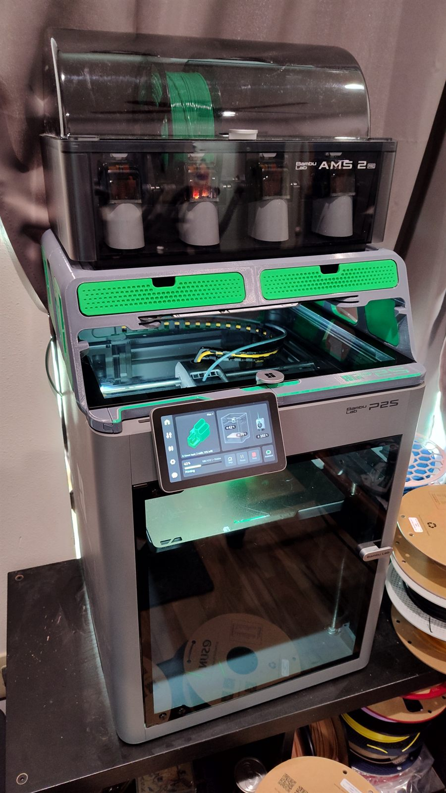
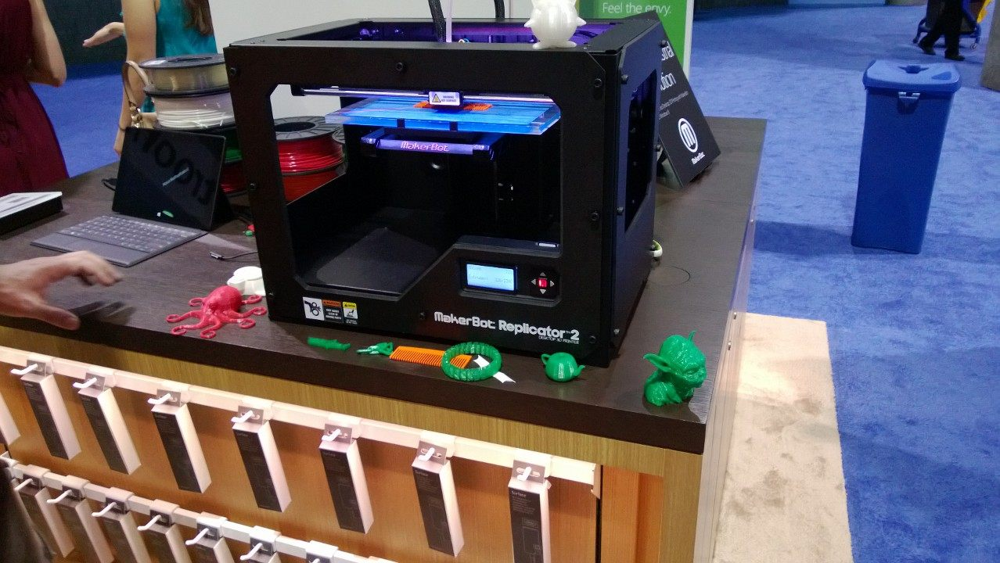
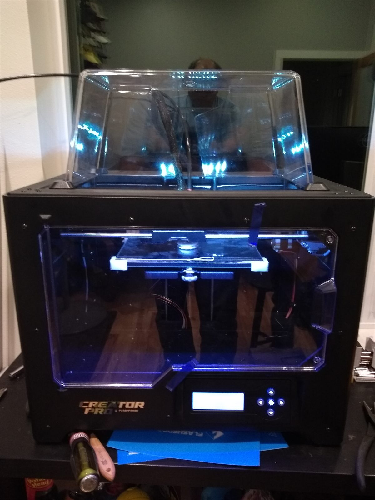
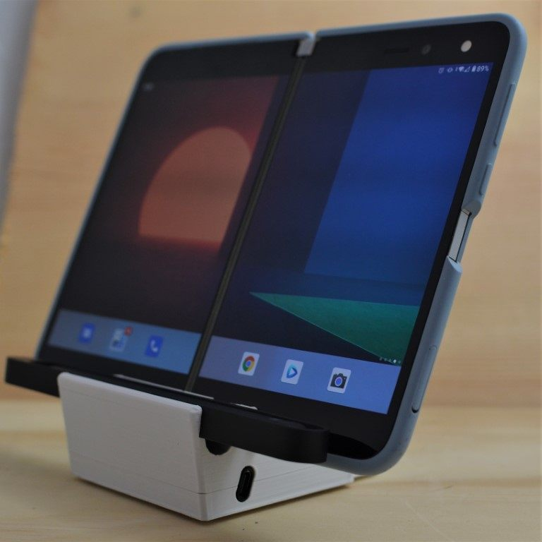
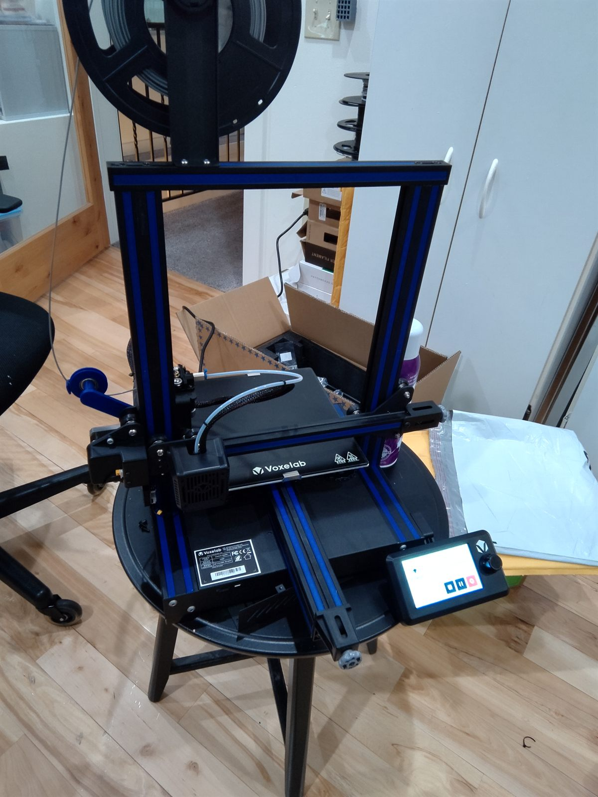
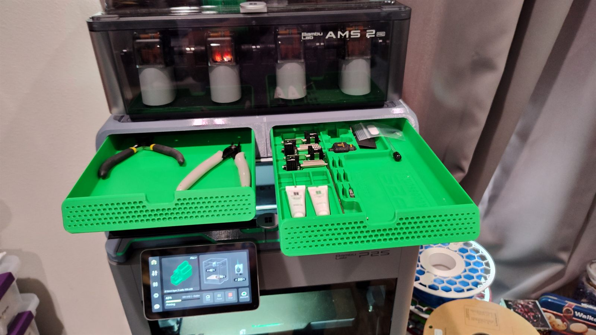
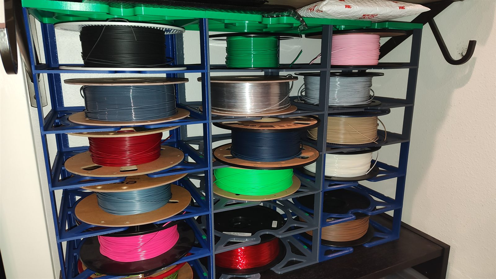

Physical Project
3D Printing
Twelve-plus years of 3D printing — from a Christmas-gift MakerBot Replicator 2 in 2013, through a Surface Duo dock side business that scaled to three Voxelab Aquilas, to a Bambu Lab P2S with AMS today.

History
The printers, in order
3D printing has been a hobby since 2013 and a side business for part of that time. Each printer below was a noticeable step up over the last — faster, quieter, more reliable, or better at managing material.
2013 — 2017
MakerBot Replicator 2
Our first printer was a MakerBot Replicator 2, which I bought as a Christmas gift for the family in 2013. I was on the Microsoft Retail Stores team at the time and the Replicator 2 was on display in the stores — the same printer that turned a lot of people on to the idea that desktop 3D printing was actually a thing you could own.
It was a single-extruder PLA machine with an open frame, no heated bed, and a removable build plate. By modern standards it was loud and slow, but it ran reliably for four years and printed everything from toys to functional parts.

2017 — 2020
FlashForge Creator Pro
In 2017 I replaced the MakerBot with a FlashForge Creator Pro. The upgrades that actually mattered day-to-day were a fully enclosed print volume and a heated build plate, which finally made ABS practical. The dual extruders were the headline feature on paper, but in practice the idle nozzle would invariably knock the print over partway through a job, so it ended up running as a single-extruder machine almost all the time.
Even so, this was the workhorse for three years and is the printer I learned the most on. It's also what we started the Surface Duo dock business on, before we needed more capacity.

2020 — 2026
DuoDocks, and the print farm that fed it
In 2020, when I got my Microsoft Surface Duo, I asked my son Rylan to design a dock for it. He's a wiz with 3D CAD, and the first version came together fast: a printed cradle that held the Duo at about 45° with the USB-C charging cable routed cleanly out the back, and optional slots for a Surface Slim Pen.
After sharing it online, people started asking if they could buy one. I wasn't sure I wanted to get into selling them, but the early interest came with great feedback — we iterated through several design revisions before deciding to make it official.

In January 2021 we launched DuoDocks — partly to learn how to run a real little business, and partly so Rylan could put the proceeds toward college. In April we started picking up unsolicited press coverage, and orders jumped enough that the FlashForge couldn't keep up. We added two Voxelab Aquilas (eventually three) and ran them as a small farm so prints would flow without anyone having to babysit a print queue.
Through mid-2021 we revised the magnetic-connector version of the dock and started sourcing compatible cables and connectors, so customers could get a working setup in one package. We also learned, the hard way, that shipping in proper boxes instead of bubble mailers is worth every extra penny.
The biggest lesson, though, was about people: the Surface Duo community is remarkably loyal, and being a small part of it has been a privilege.

2026 — Today
Bambu Lab P2S with AMS
In 2026 I picked up a Bambu Lab P2S with the AMS 2 Pro multi-material unit on top, and it has been a dream to use. Fast, quiet, enclosed, with active filament drying in the AMS itself and automatic flow/bed/Z calibration that just works.
Compared to the Aquila farm, one P2S with AMS does as much useful throughput on its own and produces noticeably better surface finish. Multi-color prints went from a thing I avoided to a thing I do casually.

The Shop Today
Filament library
Years of side-business runs and color experimentation have left a healthy filament inventory. Two printed racks keep the spools organized, dry-ish, and accessible without rolling around the floor.


Gallery
See the prints
A growing collection of prints from across the years — toys, functional parts, gifts, and prototypes — lives on its own page.